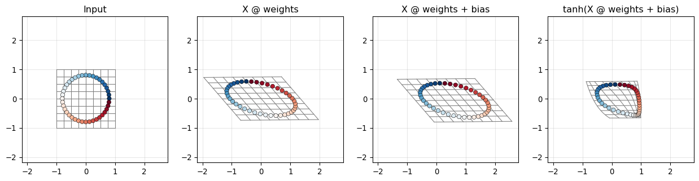
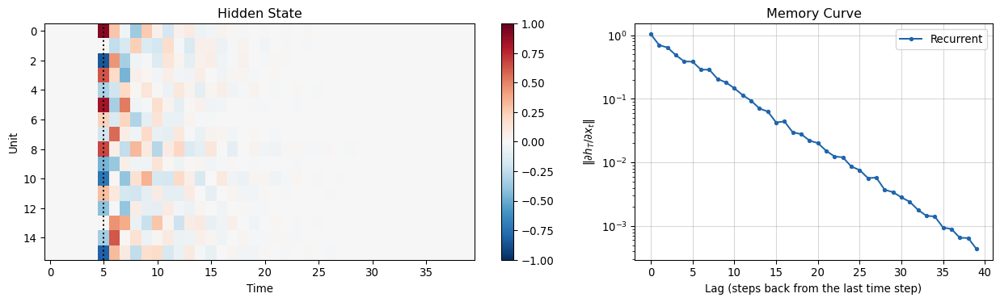
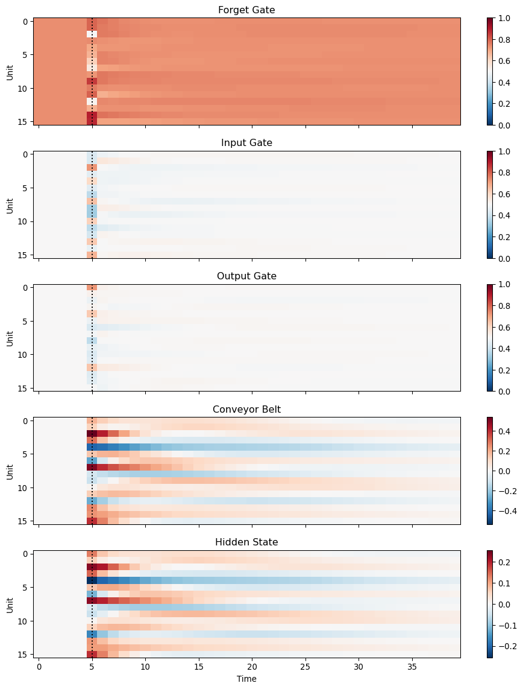

Show supplementary code
%load_ext watermark
import numpy as np
import matplotlib.pyplot as pltThe watermark extension is already loaded. To reload it, use:
%reload_ext watermark%load_ext watermark
import numpy as np
import matplotlib.pyplot as pltThe watermark extension is already loaded. To reload it, use:
%reload_ext watermarkWe re-use the parameters initializers and the activation functions introduced in the previous chapters.
from typing import Any, Callable, Dict, Tuple
from functools import partial
import jax
import jax.numpy as jnp
from jax import jit, random
from jax.lax import scan
from jax.typing import ArrayLike
KeyArray = jax.Array
CMAP = "RdBu_r"
BLUE = plt.get_cmap(CMAP)(0.1)
RED = plt.get_cmap(CMAP)(0.9)
def ones(init_state: Tuple[Tuple[int, ...], Any], random_key: ArrayLike) -> ArrayLike:
"""Initialize with a constant value of one.
Args:
init_state: state variable used for initialisation, a tuple with shape
values is always expected.
random_key: key for pseudo-random number generator.
Returns:
params: values returned as initial values for parameters.
"""
params_shape, _ = init_state
params = jnp.ones(shape=params_shape)
return params
def zeros(init_state: Tuple[Tuple[int, ...], Any], random_key: ArrayLike) -> ArrayLike:
"""Initialize with a constant value of zero.
Args:
init_state: state variable used for initialisation, a tuple with shape
values is always expected.
random_key: key for pseudo-random number generator.
Returns:
params: values returned as initial values for parameters.
"""
params_shape, _ = init_state
params = jnp.zeros(shape=params_shape)
return params
def random_uniform(
init_state: Tuple[Tuple[int, ...], Any],
random_key: ArrayLike,
min_val: float = 0.0,
max_val: float = 1.0,
) -> ArrayLike:
"""Initialize with random values sampled uniformly from min_val and max_val.
Args:
init_state: state variable used for initialisation, a tuple with shape
values is always expected.
random_key: key for pseudo-random number generator.
min_val: lower boundary of the uniform distribution.
max_val: upper boundary of the uniform distribution.
Returns:
params: values returned as initial values for parameters.
"""
params_shape, _ = init_state
params = random.uniform(
key=random_key, shape=params_shape, minval=min_val, maxval=max_val
)
return params
def random_gaussian(
init_state: Tuple[Tuple[int, ...], Any], random_key: ArrayLike, sigma: float = 0.1
) -> ArrayLike:
"""Initialize with random values sampled from a gaussian distribution with mean
zero and standard deviation of sigma.
Args:
init_state: state variable used for initialisation, a tuple with shape
values is always expected.
random_key: key for pseudo-random number generator.
sigma: standard deviation of the gaussian distribution.
Returns:
params: values returned as initial values for parameters.
"""
params_shape, _ = init_state
params = random.normal(key=random_key, shape=params_shape) * sigma
return params
@jit
def sigmoid(x: ArrayLike) -> ArrayLike:
"""Activation function transforming logits into probabilities (range 0, 1)
The textbook form 1 / (1 + exp(-x)) overflows for large negative x and
gives NaN gradients there, so we use the equivalent exp(-log(1 + exp(-x)))
which stays finite everywhere.
Args:
x: input to the activation function
Returns:
x: output of the activation function
"""
return jnp.exp(-jnp.logaddexp(0.0, -x))
@jit
def tanh(x: ArrayLike) -> ArrayLike:
"""Activation function returning the hyperbolic tangent of x (range -1, 1)
The definition (exp(x) - exp(-x)) / (exp(x) + exp(-x)) evaluates to inf / inf
= NaN for large |x|, so we use the identity tanh(x) = 2 * sigmoid(2x) - 1.
Args:
x: input to the activation function
Returns:
x: output of the activation function
"""
return 2 * sigmoid(x=2 * x) - 1All the layers follow the same structure used for the models in the previous chapters: a closure receiving the initialisation strategies and returning an init_params function, which creates the parameters, and a forward function, which transforms the input given the parameters. Sequential layers expect inputs with shape (batch, time, features).
def embedding(weights_init_method: Callable) -> Tuple[Callable, ...]:
"""Embedding layer mapping integer tokens to dense vectors.
Args:
weights_init_method: initializer for the embedding matrix.
Returns:
init_params, forward: functions for initialising the parameters and
computing the embeddings.
"""
@partial(jit, static_argnums=(0, 1))
def init_params(
vocabulary_size: int, hidden_units: int, prngkey: KeyArray
) -> Dict[str, ArrayLike]:
"""Initialize the embedding matrix.
Args:
vocabulary_size: number of distinct tokens.
hidden_units: size of the embedding vectors.
prngkey: key for pseudo-random number generator.
Returns:
params: dictionary with weights of shape (vocabulary_size, hidden_units).
"""
params = {
"weights": weights_init_method(
init_state=((vocabulary_size, hidden_units), vocabulary_size),
random_key=prngkey,
)
}
return params
@jit
def forward(
X: ArrayLike, current_params: Dict[str, ArrayLike], random_state: KeyArray
) -> ArrayLike:
"""Look up the embedding of each token.
Args:
X: integer tokens of any shape.
current_params: dictionary of parameters.
random_state: key for pseudo-random number generator (unused, kept
for API compatibility with stochastic layers).
Returns:
theta: embeddings with shape X.shape + (hidden_units,).
"""
X = jnp.asarray(X, dtype=jnp.int32)
theta = current_params["weights"][X, :]
return theta
return init_params, forwardAn embedding layer is nothing more than a lookup table: each token selects one row of the weights matrix. Repeated tokens produce identical rows, so at this stage there is no notion of context.
from matplotlib.patches import Rectangle
def visualize_embedding_lookup(
weights: ArrayLike, tokens: ArrayLike, embeddings: ArrayLike
) -> Tuple[plt.Figure, Any]:
"""Show the embedding matrix with the selected rows and the resulting output."""
limit = float(jnp.max(jnp.abs(weights)))
line_styles = ["-", "--", ":", "-."]
token_styles = {token: line_styles[i % len(line_styles)] for i, token in enumerate(dict.fromkeys(tokens.tolist()))}
fig, axs = plt.subplots(
1, 2, figsize=(11, 4.5),
gridspec_kw={"width_ratios": [weights.shape[0], len(tokens)], "wspace": 0.6},
)
for ax, matrix in zip(axs, [weights, embeddings]):
image = ax.imshow(matrix, cmap=CMAP, vmin=-limit, vmax=limit, aspect="auto")
ax.set_xlabel("Hidden Unit")
for token, style in token_styles.items():
axs[0].add_patch(
Rectangle((-0.5, token - 0.5), weights.shape[1], 1, fill=False, edgecolor="k", linestyle=style, linewidth=3)
)
for position, token in enumerate(tokens.tolist()):
axs[1].add_patch(
Rectangle((-0.5, position - 0.5), weights.shape[1], 1, fill=False,
edgecolor="k", linestyle=token_styles[token], linewidth=3)
)
axs[0].set_yticks(np.arange(weights.shape[0]))
axs[0].set_ylabel("Token")
axs[0].set_title("Embedding Matrix")
axs[1].set_yticks(np.arange(len(tokens)), [f"position {i}: token {t}" for i, t in enumerate(tokens.tolist())])
axs[1].set_title("Output")
fig.colorbar(image, ax=axs, shrink=0.8, label="Weight Value")
return fig, axsembedding_init, embedding_forward = embedding(weights_init_method=random_gaussian)
embedding_params = embedding_init(10, 8, random.PRNGKey(0))
tokens = jnp.array([3, 7, 3, 1])
embeddings = embedding_forward(tokens, embedding_params, None)
fig, axs = visualize_embedding_lookup(
weights=embedding_params["weights"], tokens=tokens, embeddings=embeddings
)
plt.show()
def dense(
weights_init_method: Callable, bias_init_method: Callable
) -> Tuple[Callable, ...]:
"""Fully connected layer computing X @ weights + bias.
Args:
weights_init_method: initializer for the weights.
bias_init_method: initializer for the bias.
Returns:
init_params, forward: functions for initialising the parameters and
computing the layer output.
"""
@partial(jit, static_argnums=(0, 1))
def init_params(
input_units: int, hidden_units: int, prngkey: KeyArray
) -> Dict[str, ArrayLike]:
"""Initialize weights and bias.
Args:
input_units: size of the last dimension of the input.
hidden_units: size of the output.
prngkey: key for pseudo-random number generator.
Returns:
params: dictionary with weights of shape (input_units, hidden_units)
and bias of shape (hidden_units,).
"""
weights_key, bias_key = random.split(prngkey)
params = {
"weights": weights_init_method(
init_state=((input_units, hidden_units), input_units),
random_key=weights_key,
),
"bias": bias_init_method(
init_state=((hidden_units,), None), random_key=bias_key
),
}
return params
@jit
def forward(
X: ArrayLike, current_params: Dict[str, ArrayLike], random_state: KeyArray
) -> ArrayLike:
"""Compute the affine transformation of the input.
Args:
X: input with shape (..., input_units).
current_params: dictionary of parameters.
random_state: key for pseudo-random number generator (unused, kept
for API compatibility with stochastic layers).
Returns:
theta: output with shape (..., hidden_units).
"""
theta = jnp.dot(X, current_params["weights"]) + current_params["bias"]
return theta
return init_params, forwardWe can visualize what a dense layer does by applying one with two inputs and two outputs to a regular grid. The matrix product rotates, stretches and shears the plane but keeps straight lines straight, the bias shifts it and only the activation function bends it. This is why stacking dense layers requires non-linearities: without them any number of layers collapses into a single linear transformation.
def make_grid_lines(limit: float = 2.0, n_lines: int = 9, n_points: int = 100) -> ArrayLike:
"""Horizontal and vertical lines of a regular grid, shape (lines, points, 2)."""
positions = np.linspace(-limit, limit, n_lines)
support = np.linspace(-limit, limit, n_points)
vertical = [np.stack([np.full_like(support, p), support], axis=1) for p in positions]
horizontal = [np.stack([support, np.full_like(support, p)], axis=1) for p in positions]
return jnp.array(vertical + horizontal)
def visualize_dense_transformation(
stages: Dict[str, ArrayLike], points: Dict[str, ArrayLike], colors: ArrayLike
) -> Tuple[plt.Figure, Any]:
"""Plot the grid and the coloured points at every stage of the transformation,
using the same square axes for every stage so that they can be compared."""
all_values = jnp.concatenate(
[jnp.concatenate([lines.reshape(-1, 2), points[title]]) for title, lines in stages.items()]
)
lower, upper = float(all_values.min()), float(all_values.max())
margin = 0.05 * (upper - lower)
fig, axs = plt.subplots(1, len(stages), figsize=(4 * len(stages), 4))
for ax, (title, lines) in zip(axs, stages.items()):
for line in lines:
ax.plot(line[:, 0], line[:, 1], c="grey", linewidth=0.8)
ax.scatter(
points[title][:, 0], points[title][:, 1], c=colors, cmap=CMAP,
s=30, edgecolors="k", linewidths=0.4, zorder=3,
)
ax.set_title(title)
ax.set_xlim(lower - margin, upper + margin)
ax.set_ylim(lower - margin, upper + margin)
ax.set_aspect("equal")
ax.grid(alpha=0.3)
return fig, axsdense_init, dense_forward = dense(
weights_init_method=partial(random_gaussian, sigma=0.8),
bias_init_method=partial(random_gaussian, sigma=0.5),
)
dense_params = dense_init(2, 2, random.PRNGKey(29))
grid_lines = make_grid_lines(limit=1.0)
angles = np.linspace(0, 2 * np.pi, 40, endpoint=False)
circle = jnp.stack([np.cos(angles), np.sin(angles)], axis=1) * 0.8
def transformation_stages(X: ArrayLike) -> Dict[str, ArrayLike]:
linear_part = jnp.dot(X, dense_params["weights"])
affine_part = dense_forward(X, dense_params, None)
return {
"Input": X,
"X @ weights": linear_part,
"X @ weights + bias": affine_part,
"tanh(X @ weights + bias)": tanh(affine_part),
}
fig, axs = visualize_dense_transformation(
stages=transformation_stages(grid_lines),
points=transformation_stages(circle),
colors=angles,
)
plt.show()
def recurrent(
state_init_method: Callable,
weights_init_method: Callable,
bias_init_method: Callable,
) -> Tuple[Callable, ...]:
"""Simple (Elman) recurrent layer computing
h_t = tanh(x_t @ weights_features + h_{t-1} @ weights_hidden + bias).
Args:
state_init_method: initializer for the learned initial hidden state.
weights_init_method: initializer for the weights.
bias_init_method: initializer for the bias.
Returns:
init_params, forward: functions for initialising the parameters and
computing the sequence of hidden states.
"""
@partial(jit, static_argnums=(0, 1))
def init_params(
hidden_units: int, features_shape: int, prngkey: KeyArray
) -> Dict[str, ArrayLike]:
"""Initialize initial state, weights and bias.
The initial state is a single vector shared by all the sequences, so
that the layer works with any batch size.
Args:
hidden_units: size of the hidden state.
features_shape: number of features at each time step.
prngkey: key for pseudo-random number generator.
Returns:
params: dictionary of parameters.
"""
initial_state_key, features_key, hidden_key, bias_key = random.split(prngkey, 4)
params = {
"initial_state": state_init_method(
init_state=((hidden_units,), None),
random_key=initial_state_key,
),
"weights_features": weights_init_method(
init_state=((features_shape, hidden_units), None),
random_key=features_key,
),
"weights_hidden": weights_init_method(
init_state=((hidden_units, hidden_units), None),
random_key=hidden_key,
),
"bias": bias_init_method(
init_state=((hidden_units,), None), random_key=bias_key
),
}
return params
@jit
def forward(
X: ArrayLike, current_params: Dict[str, ArrayLike], random_state: KeyArray
) -> ArrayLike:
"""Compute the hidden state at every time step.
Args:
X: input with shape (batch, time, features).
current_params: dictionary of parameters.
random_state: key for pseudo-random number generator (unused, kept
for API compatibility with stochastic layers).
Returns:
thetas: hidden states with shape (batch, time, hidden_units).
"""
initial_state = jnp.broadcast_to(
current_params["initial_state"],
(X.shape[0], current_params["initial_state"].shape[0]),
)
X = jnp.swapaxes(X, 0, 1)
def step(hidden_state: ArrayLike, x_t: ArrayLike) -> Tuple[ArrayLike, ArrayLike]:
"""Update the hidden state, which is both carried and returned."""
theta_features = jnp.dot(x_t, current_params["weights_features"])
theta_hidden = jnp.dot(hidden_state, current_params["weights_hidden"])
hidden_state = tanh(theta_features + theta_hidden + current_params["bias"])
return hidden_state, hidden_state
_, thetas = scan(f=step, init=initial_state, xs=X)
thetas = jnp.swapaxes(thetas, 0, 1)
return thetas
return init_params, forwardTo see how a recurrent layer carries information through time we feed it a sequence that is zero everywhere except for a single spike. The spike enters the hidden state and then echoes through the following steps, fading as it is repeatedly multiplied by the hidden weights and squashed by the activation.
We can also measure this memory directly using JAX: the norm of the derivative of the last hidden state with respect to each input, \(\lVert \partial h_T / \partial x_t \rVert\), tells us how much each past input still influences the present (we evaluate it around a sequence of zeros, as large inputs saturate the activations and distort the measure). Plotted against how far back the input is, it typically decays exponentially, which is the well known vanishing gradient problem of recurrent layers.
from jax import jacobian
def make_spike_sequence(time_steps: int, spike_time: int, spike_size: float) -> ArrayLike:
"""A single sequence of one feature, zero everywhere except at spike_time."""
X = np.zeros((1, time_steps, 1))
X[0, spike_time, 0] = spike_size
return jnp.array(X)
def compute_memory_curve(forward: Callable, params: Dict[str, Any], X: ArrayLike) -> ArrayLike:
"""Norm of the derivative of the last hidden state with respect to each input,
ordered by lag (how many steps back the input is)."""
last_hidden_state = lambda X: forward(X, params, None)[0, -1, :]
derivatives = jacobian(last_hidden_state)(X)[:, 0, :, 0]
return jnp.linalg.norm(derivatives, axis=0)[::-1]
def plot_state_heatmap(
ax: Any, states: ArrayLike, title: str, spike_time: int, **imshow_kwargs: Any
) -> Any:
"""Heatmap of a state (units x time) with the time of the spike highlighted."""
image = ax.imshow(states.T, aspect="auto", interpolation="nearest", **imshow_kwargs)
ax.axvline(spike_time, c="k", linestyle=":")
ax.set_title(title)
ax.set_ylabel("Unit")
plt.colorbar(image, ax=ax)
return ax
def plot_memory_curves(ax: Any, memory_curves: Dict[str, ArrayLike]) -> Any:
"""Memory curves on a logarithmic scale."""
for (name, curve), color in zip(memory_curves.items(), [BLUE, RED]):
ax.plot(np.arange(len(curve)), curve, marker="o", markersize=3, label=name, color=color)
ax.set_yscale("log")
ax.set_xlabel("Lag (steps back from the last time step)")
ax.set_ylabel(r"$\| \partial h_T / \partial x_t \|$")
ax.set_title("Memory Curve")
ax.grid(alpha=0.5)
ax.legend()
return axTIME_STEPS, SPIKE_TIME, HIDDEN_UNITS = 40, 5, 16
spike_sequence = make_spike_sequence(TIME_STEPS, SPIKE_TIME, spike_size=3.0)
recurrent_weights_init = partial(random_gaussian, sigma=0.2)
recurrent_init, recurrent_forward = recurrent(
state_init_method=zeros,
weights_init_method=recurrent_weights_init,
bias_init_method=zeros,
)
recurrent_params = recurrent_init(HIDDEN_UNITS, 1, random.PRNGKey(2))
recurrent_states = recurrent_forward(spike_sequence, recurrent_params, None)[0]
quiet_sequence = jnp.zeros_like(spike_sequence)
recurrent_memory = compute_memory_curve(recurrent_forward, recurrent_params, quiet_sequence)
fig, axs = plt.subplots(1, 2, figsize=(13, 4), gridspec_kw={"width_ratios": [3, 2]})
plot_state_heatmap(
axs[0], recurrent_states, "Hidden State", SPIKE_TIME, cmap=CMAP, vmin=-1, vmax=1
)
axs[0].set_xlabel("Time")
plot_memory_curves(axs[1], {"Recurrent": recurrent_memory})
plt.tight_layout()
plt.show()
def lstm(
state_init_method: Callable,
weights_init_method: Callable,
bias_init_method: Callable,
forget_bias: float = 1.0,
) -> Tuple[Callable, ...]:
"""Long Short-Term Memory layer.
Args:
state_init_method: initializer for the learned initial hidden and cell states.
weights_init_method: initializer for the weights.
bias_init_method: initializer for the bias.
forget_bias: constant added to the bias of the forget gate. Starting
with the forget gate open helps the gradient flow through long
sequences early in training (Jozefowicz et al., 2015). Defaults to 1.0.
Returns:
init_params, forward: functions for initialising the parameters and
computing the sequence of hidden states.
"""
@partial(jit, static_argnums=(0, 1))
def init_params(
hidden_units: int, features_shape: int, prngkey: KeyArray
) -> Dict[str, Any]:
"""Initialize initial states and, for each gate, weights and bias.
The initial states are single vectors shared by all the sequences, so
that the layer works with any batch size.
Args:
hidden_units: size of the hidden and cell states.
features_shape: number of features at each time step.
prngkey: key for pseudo-random number generator.
Returns:
params: dictionary of parameters, with one sub-dictionary per gate.
"""
initial_hidden_key, initial_conveyor_key, seed_key = random.split(prngkey, 3)
params = {
"initial_hidden": state_init_method(
init_state=((hidden_units,), None),
random_key=initial_hidden_key,
),
"initial_conveyor": state_init_method(
init_state=((hidden_units,), None),
random_key=initial_conveyor_key,
),
}
for gate in ["forget_gate", "input_gate", "cell_gate", "output_gate"]:
weights_input_key, weights_hidden_key, bias_key, seed_key = random.split(
seed_key, 4
)
params[gate] = {
"weights_input": weights_init_method(
init_state=((features_shape, hidden_units), None),
random_key=weights_input_key,
),
"weights_hidden": weights_init_method(
init_state=((hidden_units, hidden_units), None),
random_key=weights_hidden_key,
),
"bias": bias_init_method(
init_state=((hidden_units,), None), random_key=bias_key
),
}
params["forget_gate"]["bias"] = params["forget_gate"]["bias"] + forget_bias
return params
@jit
def forward(
X: ArrayLike, current_params: Dict[str, Any], random_state: KeyArray
) -> ArrayLike:
"""Compute the hidden state at every time step.
Args:
X: input with shape (batch, time, features).
current_params: dictionary of parameters.
random_state: key for pseudo-random number generator (unused, kept
for API compatibility with stochastic layers).
Returns:
thetas: hidden states with shape (batch, time, hidden_units).
"""
batch_size = X.shape[0]
hidden_units = current_params["initial_hidden"].shape[0]
initial_hidden = jnp.broadcast_to(
current_params["initial_hidden"], (batch_size, hidden_units)
)
initial_conveyor = jnp.broadcast_to(
current_params["initial_conveyor"], (batch_size, hidden_units)
)
X = jnp.swapaxes(X, 0, 1)
def gate_activation(
gate_params: Dict[str, ArrayLike], hidden_state: ArrayLike, x_t: ArrayLike
) -> ArrayLike:
"""Linear combination of previous hidden state and current input for one gate."""
return (
jnp.dot(hidden_state, gate_params["weights_hidden"])
+ jnp.dot(x_t, gate_params["weights_input"])
+ gate_params["bias"]
)
def step(
carry: Tuple[ArrayLike, ArrayLike], x_t: ArrayLike
) -> Tuple[Tuple[ArrayLike, ArrayLike], ArrayLike]:
"""Update hidden state and conveyor belt (cell state) for one time step."""
hidden_state, conveyor_belt = carry
forget_hidden = sigmoid(
gate_activation(current_params["forget_gate"], hidden_state, x_t)
)
input_hidden = sigmoid(
gate_activation(current_params["input_gate"], hidden_state, x_t)
)
output_hidden = sigmoid(
gate_activation(current_params["output_gate"], hidden_state, x_t)
)
conveyor_hat = tanh(
gate_activation(current_params["cell_gate"], hidden_state, x_t)
)
conveyor_belt_new = (forget_hidden * conveyor_belt) + (
input_hidden * conveyor_hat
)
hidden_state_new = output_hidden * tanh(conveyor_belt_new)
return (hidden_state_new, conveyor_belt_new), hidden_state_new
_, thetas = scan(
f=step,
init=(initial_hidden, initial_conveyor),
xs=X,
)
thetas = jnp.swapaxes(thetas, 0, 1)
return thetas
return init_params, forwardFor the LSTM we feed the same spike, but this time we can also look inside the layer. The forward function only returns the hidden states, so we re-compute the gates step by step with the same equations (and check that we obtain exactly the same hidden states). The forget gate starts mostly open thanks to the forget_bias, the input gate decides how much of the spike is written onto the conveyor belt (the cell state), which can then carry it much further than the hidden state of the plain recurrent layer.
def compute_lstm_inner_states(X: ArrayLike, params: Dict[str, Any]) -> Dict[str, ArrayLike]:
"""Re-compute the LSTM gates and states for a single sequence, step by step."""
hidden_state, conveyor_belt = params["initial_hidden"], params["initial_conveyor"]
gate = lambda name, h, x: (
jnp.dot(h, params[name]["weights_hidden"])
+ jnp.dot(x, params[name]["weights_input"])
+ params[name]["bias"]
)
inner_states = {name: [] for name in ["Forget Gate", "Input Gate", "Output Gate", "Conveyor Belt", "Hidden State"]}
for x_t in X[0]:
forget_hidden = sigmoid(gate("forget_gate", hidden_state, x_t))
input_hidden = sigmoid(gate("input_gate", hidden_state, x_t))
output_hidden = sigmoid(gate("output_gate", hidden_state, x_t))
conveyor_hat = tanh(gate("cell_gate", hidden_state, x_t))
conveyor_belt = forget_hidden * conveyor_belt + input_hidden * conveyor_hat
hidden_state = output_hidden * tanh(conveyor_belt)
for name, value in zip(
inner_states,
[forget_hidden, input_hidden, output_hidden, conveyor_belt, hidden_state],
):
inner_states[name].append(value)
return {name: jnp.stack(values) for name, values in inner_states.items()}lstm_init, lstm_forward = lstm(
state_init_method=zeros,
weights_init_method=recurrent_weights_init,
bias_init_method=zeros,
)
lstm_params = lstm_init(HIDDEN_UNITS, 1, random.PRNGKey(2))
lstm_inner_states = compute_lstm_inner_states(spike_sequence, lstm_params)
assert jnp.allclose(
lstm_inner_states["Hidden State"], lstm_forward(spike_sequence, lstm_params, None)[0], atol=1e-6
)
fig, axs = plt.subplots(5, 1, figsize=(10, 12), sharex=True)
for ax, (name, states) in zip(axs, lstm_inner_states.items()):
if "Gate" in name:
plot_state_heatmap(ax, states, name, SPIKE_TIME, cmap=CMAP, vmin=0, vmax=1)
else:
limit = float(jnp.max(jnp.abs(states)))
plot_state_heatmap(ax, states, name, SPIKE_TIME, cmap=CMAP, vmin=-limit, vmax=limit)
axs[-1].set_xlabel("Time")
plt.tight_layout()
plt.show()
Comparing the memory curves of the two layers, initialised in the same way, shows the point of the gating mechanism: the influence of past inputs decays much more slowly through the conveyor belt of the LSTM.
lstm_memory = compute_memory_curve(lstm_forward, lstm_params, quiet_sequence)
fig, ax = plt.subplots(1, 1, figsize=(7, 4))
plot_memory_curves(ax, {"Recurrent": recurrent_memory, "LSTM": lstm_memory})
plt.show()
Here you can find the hardware and python requirements used for building this post.
%watermarkLast updated: 2026-11-18T15:24:52.110707+01:00
Python implementation: CPython
Python version : 3.13.2
IPython version : 9.0.2
Compiler : Clang 18.1.8
OS : Darwin
Release : 25.6.0
Machine : arm64
Processor : arm
CPU cores : 14
Architecture: 64bit
%watermark --iversionsmatplotlib: 3.10.1
numpy : 2.2.4
jax : 0.7.2